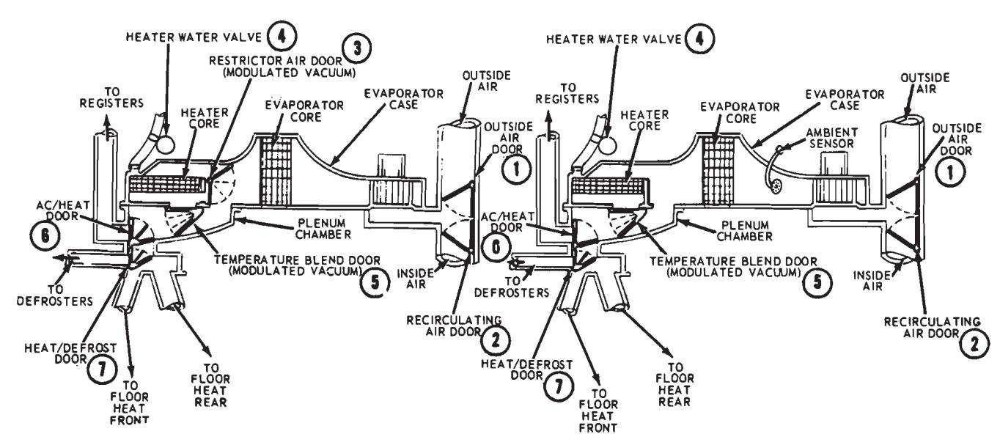
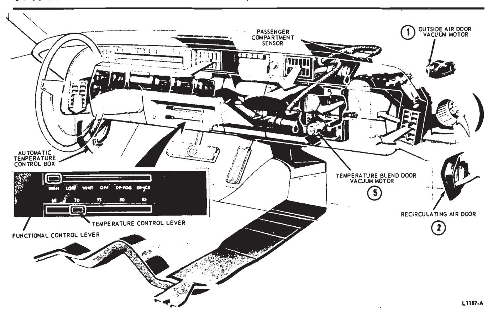
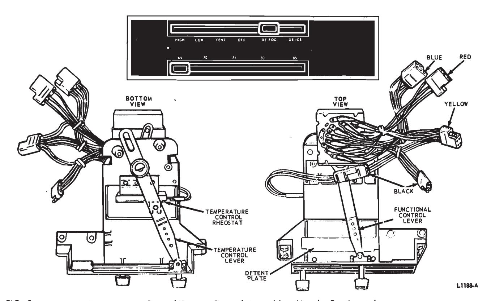
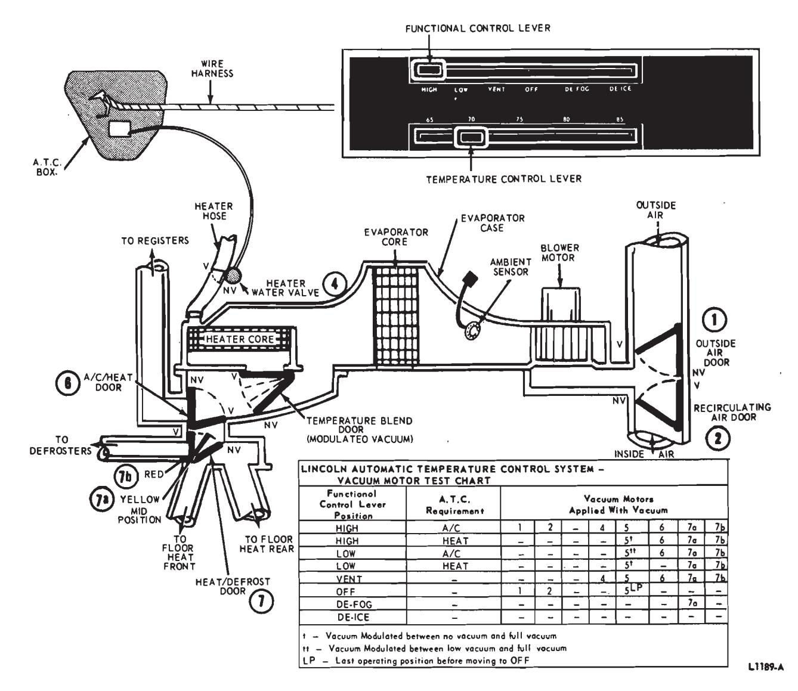
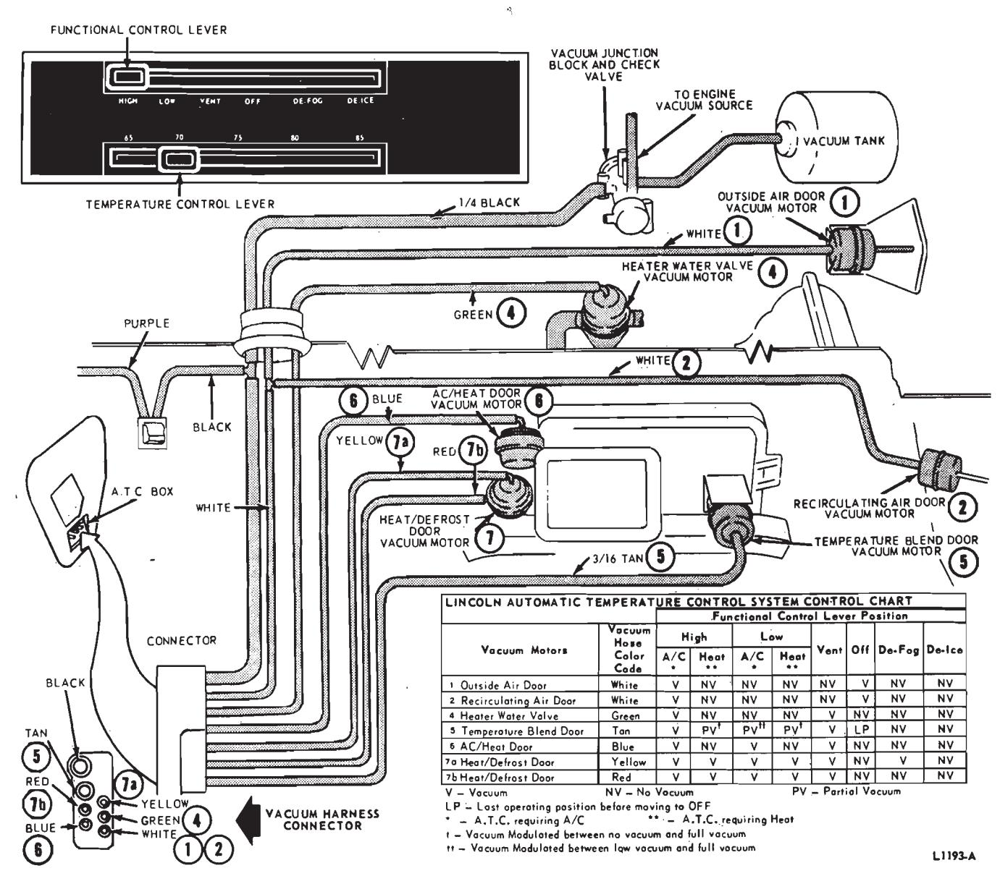
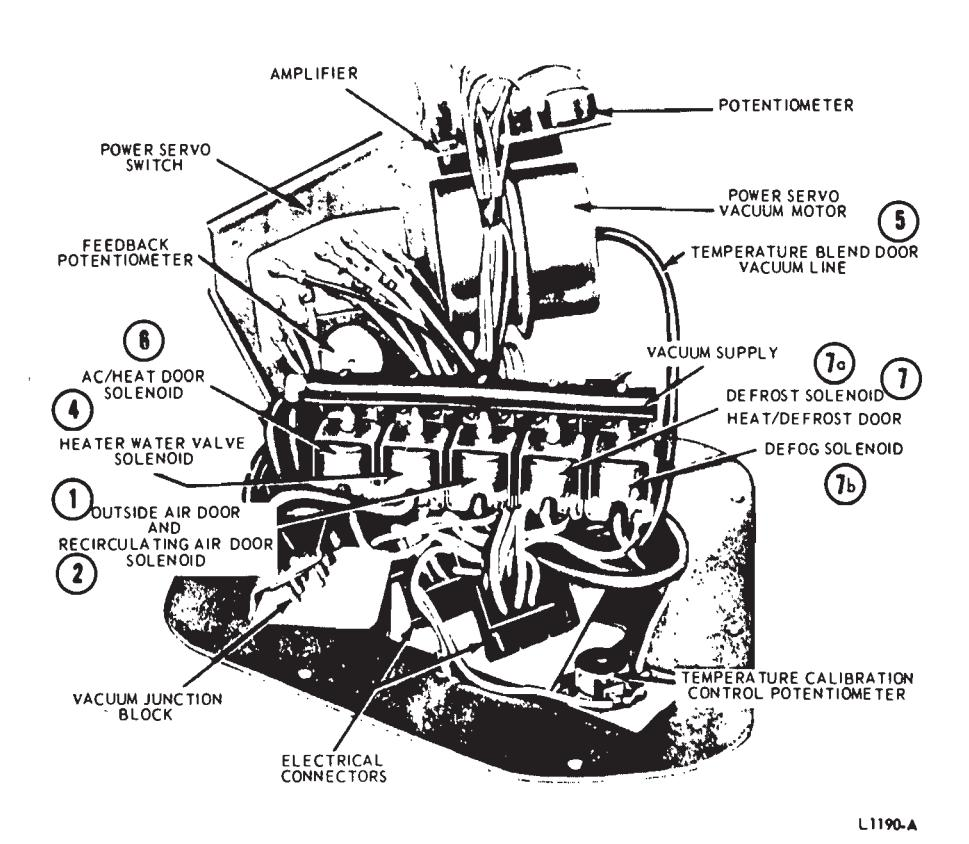
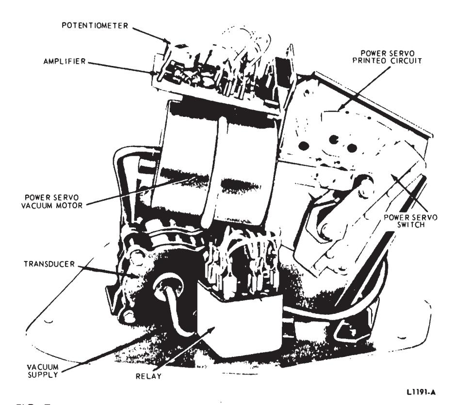
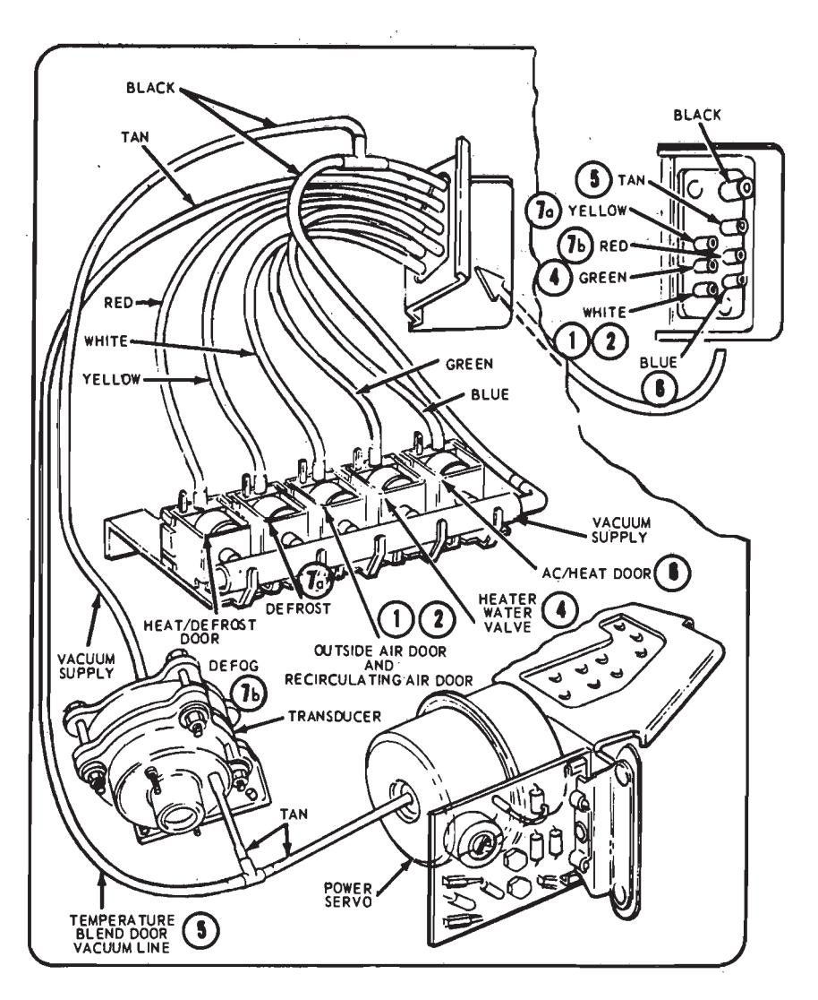
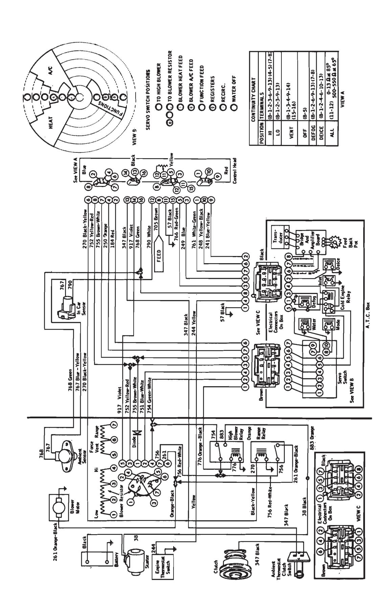
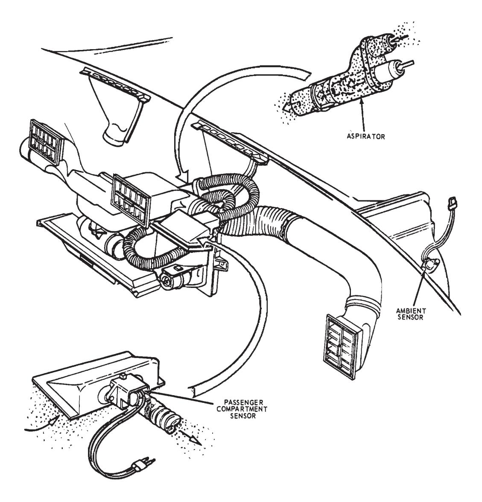

Automatic Temperature Control · 34-05-02
Vacuum Motors
The test charts in Figs. 4 and 5 will determine which vacuum motor should be functioning with applied vacuum during the various functional lever positions and automatic temperature control requirements. Check for proper operation by following the charts (Figs. 4 and 5) along with the descriptions that follow:
Each vacuum control motor, and the door or valve it operates, has been assigned a code number that relates directly to its application in the system as follows:
(1) Outside Air Door

MANUAL A/C - HEATER SYSTEM
AUTOMATIC TEMPERATURE CONTROL SYSTEM
Fig. 1 — Manual A/C—Heater and Automatic Temperature Control Systems—Lincoln Continental

Fig. 2 — Automatic Temperature Control System Air Flow (Maximum A/C Position)—Lincoln Continental

Fig. 3 — Automatic Temperature Control System Control Assembly—Lincoln Continental

Fig. 4 — Automatic Temperature Control Blend Air System Schematic—Lincoln Continental
- (2) Recirculating Air Door
- (3) Not used in the A.T.C. system
- (4) Heater Water Valve
- (5) Temperature Blend Door
- (6) AC/Heat Door
- (7) Heat/Defrost Door
The functions of these doors are identical in operation to the Manual A/C—Heater system except that the AC/Heat Door (6) does not have a mid-position.
Control Operation
HIGH—Cooling
As the passenger compartment temperature approaches the temperature control setting, the Outside Air Door (1) is opened (no vacuum) admitting outside air and the Recircu- lating Air Door (2) is closed (no vacuum) (Fig. 4).
When the passenger compartment temperature and the control setting temperature are nearly balanced, the Temperature Blend Door (5) is actuated. The door moves to a position so that part of the air leaving the evaporator core is directed through the heater core where it is warmed. Blend air (the mixture of cool and warm air) then is directed into the passenger compartment through the air conditioning ducts and registers.
The position of the Temperature Blend Door (5) changes automatically to maintain the temperature selected on the dial; at the same time, blower speeds are reduced. If the passenger compartment temperature rises above the temperature control setting, the Temperature Blend Door (5) moves to admit more cool air and less warm air. If the passenger compartment temperature drops below the temperature control setting, the Temperature Blend Door (5) moves to admit more warm air and less cool air. As maximum heating or cooling operation is approached, blower speeds are automatically increased.
LOW---Cooling
Same as HIGH maximum cooling except for lower blower speeds, and fresh air is used at all times in LOW.
LOW or HIGH Heating
When the passenger compartment temperature and the temperature con- trol lever setting are nearly balanced, the Temperature Blend Door (5) is actuated. The door moves to a position so that only part of the air leaving the evaporator core is directed through the heater core where it is warmed. Blend air (the mixture of cool and warm air) then is directed into the passenger compartment.

Fig. 5 — Automatic Temperature Control System Vacuum Diagram—Lincoln Continental
The position of the Temperature Blend Door (5) changes automatically to maintain the temperature selected on the control lever; at the same time blower speeds are reduced. If the passenger compartment temperature rises above the temperature control lever setting, the Temperature Blend Door (5) moves to admit more cool air and less warm air. If the passenger compartment temperature drops below the temperature control lever setting, the Temperature Blend Door (5) moves to admit more warm air and less cool air. As maximum heating or cooling operation is approached, blower speeds are automatically increased.
Approximately 10 percent of this air flow is diverted to the defroster nozzles.
VENT Position
In VENT position all doors are in the same position as in LOW—COOLING and the Temperature Blend Door (5) directs all air around the heater core. The blower speed is at a predetermined medium setting.
OFF Position
In OFF position, the Outside Air Door (1) is closed, the Recirculating Air Door (2) is open, the AC/Heat Door (6) is closed (no vacuum), and the Heat/Defrost Door (7) is in the closed (no vacuum) position. The Heater Water Valve (4) is open (no vacuum) the blower is off, the A/C clutch is off and the Temperature Blend Door (5) remains in the last operational position.
DEFOG Position
In DEFOG, operation is the same as in HIGH HEATING, except that the Heat/Defrost Door (7) is in midposition (7a vacuum). Forty percent of the air flow is to the defroster no-

Fig. 6 — A.T.C. Box Door Control Solenoids

Fig. 7 — A.T.C. Box—Power Servo Components
zzles with the remainder directed to the heat ducts. There is no system operational delay in DEFOG due to engine coolant temperatures.
DEICE Position
When the functional control lever is in the DEICE position, the Temperature Blend Door (5) is fully open and all incoming air is diverted through the heater core to be warmed, and then directed to the defroster nozzles (Heat/Defrost Door 7a and 7b no vacuum). The system operates on high blower only in DEICE. Ten percent of this airflow is bled to the heater floor outlets.
Vacuum Control System
The Automatic Temperature Control System vacuum schematic and a chart listing vacuum system operating conditions are shown in Fig. 5. A pictorial view of the vacuum control system is shown in Figs. 6, 7 and 8.
The vacuum control system consists of a vacuum reserve tank, check valve, Heater Water Valve (4), five vacuum motors, ATC box (Automatic Temperature Control) and the required vacuum tubing and junction blocks to connect the components. The vacuum reservoir is located on the front of the right front fender.
All air flow control doors are vacuum operated. The controls on the instrument panel provide the electrical requirements to the ATC box. The ATC box, in turn, supplies vacuum to the required vacuum motors which open and close the respective air doors (Fig. 4).
The Outside Air Door (1), Recirculating Air Door (2), and AC/Heat Door (6) are either fully open or fully closed, and the Heat/Defrost Door (7) is halfway open, fully open or closed. The Temperature Blend Door (5) may assume any position within the limits of its travel depending on the amount of vacuum supplied from the ATC box. The Heater Water Valve (4) is fully open or fully closed.
When the system calls for maximum cooling, the Temperature Blend Door (5) is closed at a minimum of 10 inches vacuum and all air bypasses the heater core. The AC/Heat Door (6) is in the open position (vacuum) and the Heat/Defrost Door (7) is in the open position (7a and 7b vacuum) at a minimum of 10 inches vacuum and air is distributed through the A/C registers.
When the passenger compartment temperature approaches the desired temperature setting, the AC/Heat Door (6) may change from the A/C register (vacuum) to the floor heat position (no vacuum), or from heat to air conditioning if the Temperature Blend Door (5) reaches approximately mid-position. The AC/Heat Door (6) is positioned by a switch contact change at the power servo switch. This energizes the AC/Heat Door (6) solenoid to direct air to the registers when the system calls for A/C or deenergizes the solenoid and directs the blended air to the heater floor outlets when the system calls for heat.
Electrical System
Automatic Temperature Control Box
The ATC box contains a transistorized DC amplifier, a transducer to convert the amplifier electrical output to a variable vacuum supply, one relay, power servo, and five vacuum control solenoids (Figs. 6 and 7).
A schematic wiring diagram of the ATC box and related components is shown in Fig. 9. The input signal to the amplifier is dependent on the series resistance of the temperature control lever rheostat, the fixed value of a calibration rheostat (located in the control unit), and the combined resistance of the two sensors.
The amplifier output is used to control a transducer, thereby converting electrical energy to a variable vacuum supply to accomplish the required automatic operating sequences. The transducer output vacuum controls a modulated vacuum operated servo switch, and the Temperature Blend Door (5) which regulates the hot and cold air flow. The vacuum operated servo switch located in the ATC box selects blower speeds and operates the vacuum solenoids which control air distribution through the heater outlets or air conditioning registers, and also controls the Outside Air Door (1) and the Recirculating Air Door (2).
Cold Weather Operation
Assuming an initial cold weather operation, the system functions as follows: Set the functional control lever for HIGH if extremely cold, and set the temperature control lever in a comfort setting (approximately 75 degrees F.). The heating system will be automatically positioned for maximum heat and high blower operation, but will not turn on until the engine coolant temperature reaches approximately 130 degrees F. (This normally takes 3-5 minutes of engine operations).

Fig. 8 — A.T.C. Box Vacuum Diagram
In cold temperatures, the sensors will have a relatively high series resistance. This controls the amplifier and transducer in a manner to produce a minimum outlet vacuum and calls for maximum heater operation.
As the vehicle interior warms up, the passenger compartment sensor resistance value decreases resulting in an increased transducer vacuum output. As vacuum output increases, the Temperature Blend Door (5) position will change reducing discharge air temperature, and the vacuum operated servo switch will cause the blower speed to drop off. As the passenger compartment temperature approaches the temperature control lever setting, the transducer vacuum will hold at the level required to balance the heat loss or gain from the vehicle to the outside air.
Hot Weather Operation
Now assume that the vehicle is to be operated in hot weather. With the same control lever settings as used for cold weather operation, the system will come on when the engine is started.
In hot temperatures, the sensors will have a low series resistance. This controls the amplifier and transducer and produces a high vacuum. Under these conditions the transducer vacuum is at its highest value (at or above
LIBAA 10 inches) calling for maximum air conditioning (high blower and recirculated air). As the passenger compartment cools down the passenger compartment sensor resistance values increase causing decreased transducer vacuum output. This results in the system changing from recirculated air to outside air and also in reduced blower speeds. The Temperature Blend Door (5) position will change causing some air to flow through the heater core for temperature regulation.

Fig. 9 — Automatic Temperature Control System Electrical Diagram—Lincoln Continental
For mid ambient conditions, the temperature control lever should be set at 75 degrees F. and the functional control lever in LOW. Automatic control in LOW is similar to HIGH except that the system is locked on outside air, and there are five blower speeds instead of three.
A disturbance, such as opening the windows on a hot day, causes the sensor string resistance to drop, resulting in increased transducer vacuum output. With HIGH transducer vacuum output, more air conditioning is called for to counteract the hot air coming in the vehicle windows.
In DEFOG, system operation is the same as in HIGH except that outside air is used at all times and the Heat-/Defrost Door (7) is in the midposition. In DEICE, an electrical signal is supplied directly to the amplifier, over-riding all other temperature signals resulting in maximum heat and high blower operation.
Temperature adjustment of individual preference in the range of 65-85 degrees is provided by the temperature control lever and rheostat. If the temperature control lever is positioned warmer, the rheostat adds resistance to the sensor string. The effect is the same as if the sensor thermistors were cooled and had more resistance. This causes an amplifier and transducer response that decreases the vacuum output. This in turn increases heater output until the sensor thermistors have become warmer and the sensor string resistance has changed to compensate for the temperature control lever adjustment. The system then regulates at the new temperature that is indicated by the temperature control lever position. A similar but opposite reaction occurs when the temperature control lever is set cooler.
Blower Motor Speed
Blower motor speed is controlled by the vacuum-operated power servo switch. With either high or low vacuum from the transducer, the switch cuts out blower resistors to provide high blower speed. As the transducer vacuum regulates between the two extremes and passenger compartment temperature approaches the temperature control lever setting, the blower voltage and speed are reduced by cutting in resistors. There are five power servo switch positions to provide five blower speeds in LOW. In HIGH the instrument panel control eliminates the two lowest switch steps and activiates a relay to cut out an additional range resistor, causing three higher blower voltages and corresponding speeds.
Power Servo
The power servo switch assembly is a vacuum actuated electrical switch in the ATC box. The switch assembly contains mechanical linkage connecting the power servo vacuum motor to the electrical switch arm and a feedback potentiometer. The vacuum motor is calibrated so that a known vacuum is required to move it to any corresponding position. The feedback potentiometer signals the amplifier the related position of the servo switch arm and the same vacuum is also provided to the Temperature Blend Door (5) vacuum motor.
The switch assembly is divided into three sections:
- Function—Outside Air Door (1), Recirculating Air Door (2), Heater Water Valve (4), AC/Heat Door (6), Heat/Defrost Door 7a and Heat/Defrost Door 7b.
- Blower motor control during air delivery through the floor outlets (warm air).
- Blower motor control during air delivery through the registers (cool air).
Instrument Panel Control Assembly
Figure 3 illustrates the top and bottom views of the instrument panel control assembly. The six-position functional control lever rotary switch, and the temperature control lever and rheostat are included in the assembly.
The six-position functional control switch may be checked with a continuity tester. There should be electrical continuity between and only between the indicated terminals for each switch position. If not, the rotary switch is damaged.
The temperature lever part of the control assembly may be calibrated by varying the relationship between the temperature lever and the temperature control rheostat. Refer to Section 3, Adjustments.
Temperature Sensors
The Automatic Temperature Control System makes use of two temperature sensing devices, called thermistors (sensors) for its operation (Fig. 10). An ambient sensor is located in the evaporator case to sense temperature of the incoming air. The second sensor is located behind a grille in the instrument panel to sense passenger compartment air temperature. The resistance of these sensors change with temperature and provide varying electrical values to the ATC box. The sensors are wired in series with the temperature control rheostat. When the combined resistance is low, the ATC box will call for air conditioning. When the combined resistance is high, the ATC box will call for heat. The ambient sensor, is encased to provide a thermal delay and prevent the system from following momentary changes in the ambient air temperature.
The passenger compartment sensor has the greatest effect on system operation. It samples the passenger compartment air drawn past it by an aspirator.
Temperature Sensors and Control Rheostat Check
The resistance of the passenger compartment and ambient sensors should be tested together with the control assembly rheostat to determine if they are operating properly. A quick functional check of the sensors and rheostat can be made with the engine and system operating. Move the temperature control lever to 75 degrees F. and the functional control lever to HIGH position for this check.
Hold a lighted match close to the passenger compartment sensor opening in the instrument panel. The system should operate on full air conditioning operation within 15 seconds. If the system does not respond to this functional check, the sensors and rheostat should be checked for proper resistance values.
Use the following procedure to determine if the sensors and rheostat are operating properly. The resistance of the sensors change with tempera- ture. The vehicle and sensors should be at approximately 70 degrees F. to 80 degrees F. and the temperature control rheostat should be properly adjusted for accurate test results. Refer to Adjustments, Temperature Control Rheostat.

Fig. 10 — Automatic Temperature Control Sensing System Components
- Disconnect the battery. Set the functional control lever to the OFF position.
- Set the temperature control lever at 75 degrees F. Disconnect the black eight pin electrical wiring connector from the ATC box. Connect an ohmmeter between the green wire of the electrical harness and ground.
- Observe the resistance. With the ambient temperature between 70-80 degrees F., the resistance of the sensor string and rheostat should be between 1200 and 1300 ohms. If the re- - sistance measured is somewhat higher or lower than that specified, the resistance of the individual sensors and rheostat should be checked.
- To check the rheostat, measure total resistance with the temperature control set for 85 degrees F. Then set temperature control at 65 degrees F. and again note the resistance reading. The difference in resistance between 65 degrees F. and 85 degrees F. dial setting should be between 480 and 590 ohms. If the resistance is less than 480 ohms or more than 590 ohms, the rheostat is damaged.
- To check the resistance of the ambient sensor, disconnect the two terminal connectors at the sensor and connect the ohmmeter across the two terminals. The resistance should be between 165 ohms and 185 ohms with an ambient temperature of approximately 70-80 degrees F.
- To check the resistance of the passenger compartment sensor (rheostat must be satisfactorily checked out first), set the temperature control lever at 65 degrees F. and connect an ohmmeter between ground and the blue-yellow wire terminal of the two terminal wiring harness connectors to the ambient sensor. The passenger compartment sensor resistance should be between 750 ohms and 900 ohms.
Sensor Aspirator
A passenger compartment sensor aspirator is built into the air distribution system to draw a sample of passenger compartment air through an opening in the instrument panel and past the sensor (Fig. 10). This system insures minimum sensor response time to the passenger compartment temperature changes, and samples the passenger compartment temperature at a location as close to breath-level as practical. The sensor location also provides the best balance between ambient and passenger compartment temperature.
30-Amp Circuit Breaker
The 30-amp fuse-type circuit breaker is located in the fuse panel which is mounted on the left side of the dash panel.
Compressor Clutch Switch
The compressor clutch should be engaged any time the system is turned on and the ambient switch is cut in.
Engine Thermostat Switch
A circuit from the engine thermostat switch to the ATC box provides a delay in the operation of the heater system until the engine coolant has warmed enough to minimize the duration of a cold air blast from the heater ducts. In LOW and HIGH a relay in the ATC box is energized by the engine thermostat switch to prevent blower operation when heat is called for until engine coolant temperature reaches 130 degrees F.